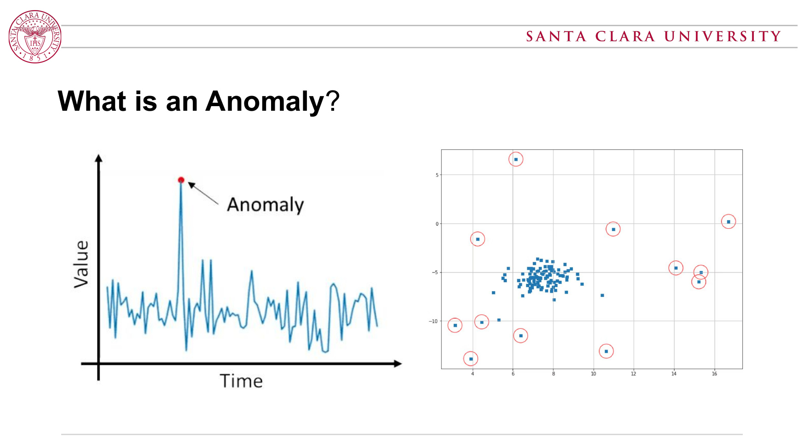
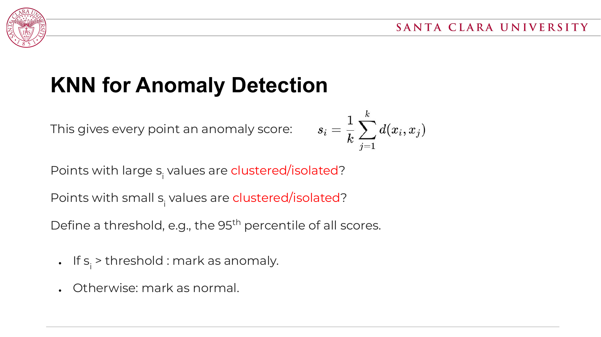
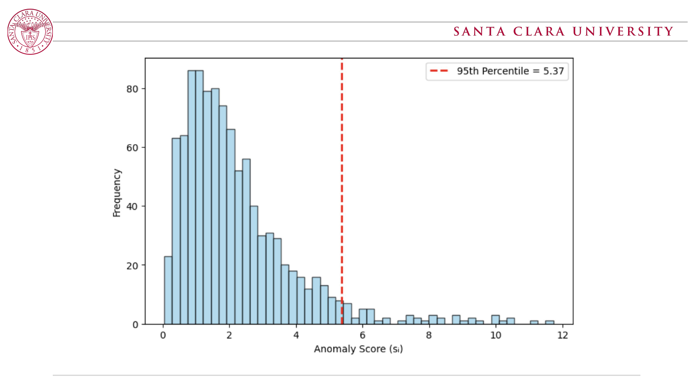
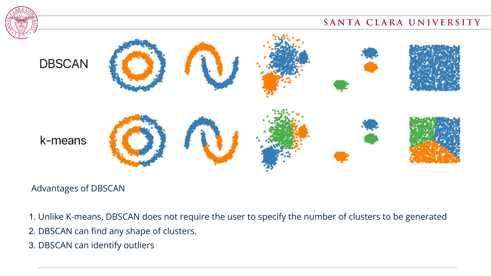
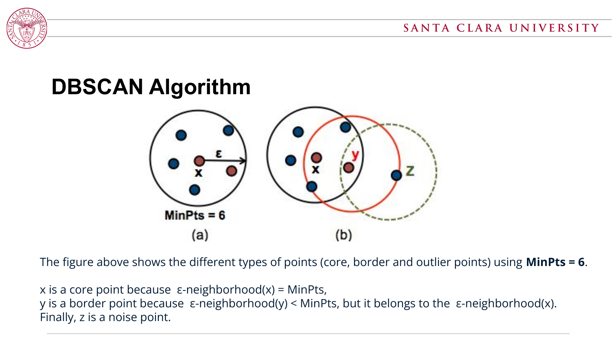
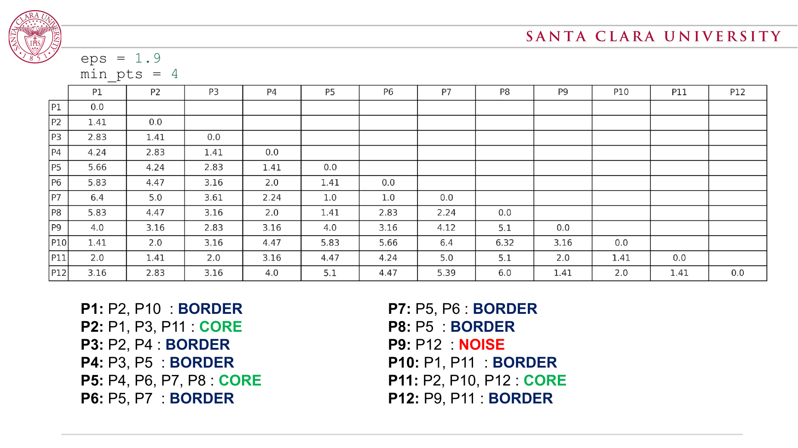
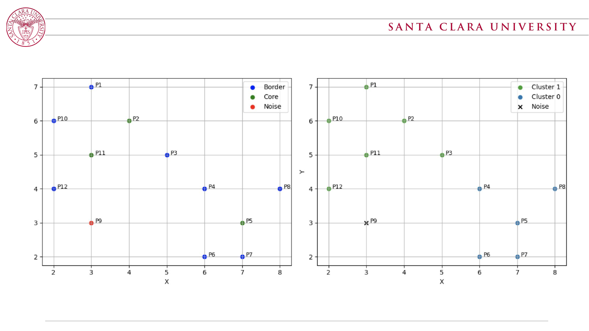
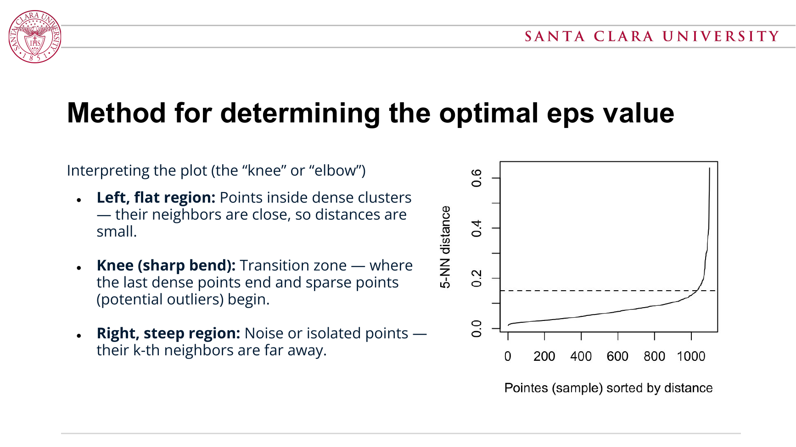

Supervised Anomaly Detection
中文理解：训练数据已经标好了 normal / anomaly。问题变成一个二分类任务。
How it works: 学一个分类器，把新样本判成 normal 或 anomaly。课件用 KNN 分类作为例子：看最近的 K 个已标注邻居，用多数投票决定类别。
适用：你有可靠标签，且异常类型在训练集中出现过。例如历史欺诈记录、已标注的机器故障日志。
异常检测是在数据中找出明显偏离正常模式的点、事件或样本。异常也常叫 outliers。 它们可能来自数据收集错误、真实但罕见的事件，或系统故障。
中文理解：训练数据已经标好了 normal / anomaly。问题变成一个二分类任务。
How it works: 学一个分类器，把新样本判成 normal 或 anomaly。课件用 KNN 分类作为例子：看最近的 K 个已标注邻居，用多数投票决定类别。
适用：你有可靠标签，且异常类型在训练集中出现过。例如历史欺诈记录、已标注的机器故障日志。
中文理解：没有 anomaly 标签，通常假设“大多数样本是正常的”。算法需要自己发现稀有、孤立或低密度的点。
How it works: 给每个点一个 anomaly score，或直接把低密度区域标成 noise/outlier。
适用：异常很少、标签贵或标签不完整。这也是课件强调 anomaly detection 常常采用的设置。
KNN、K-means、DBSCAN 都依赖“点和点之间有多近”。距离越小，样本越相似；距离越大，越可能偏离正常群体。
注意：不同特征量纲差很大时，要先做 scaling，否则“数值范围大的特征”会主导距离。
核心想法：相似样本应该有相似标签。给一个 test point，计算它和训练点的距离，找最近的 K 个邻居，用多数投票预测 normal / anomaly。
English exam phrase: KNN classifies a point by the majority label among its K nearest labeled neighbors.
核心想法：正常点通常在密集区域，离邻居近；异常点比较孤立，离最近邻也远。
Threshold: 课件例子使用分位数阈值，例如 95th percentile。若 si 大于阈值，则标为 anomaly。
English exam phrase: In unsupervised KNN anomaly detection, the average distance to the k nearest neighbors is used as the anomaly score.
核心想法：把数据划分成 K 个由 centroid 表示的簇。异常通常表现为离最近 centroid 很远，或落在非常小/稀疏的簇中。
Anomaly score: 常见做法是用“到最近 centroid 的距离”作为异常分数。
English exam phrase: K-means alternates between assigning points to the nearest centroid and recomputing centroids as cluster means.
核心想法：簇是高密度区域，异常是低密度区域的 noise。DBSCAN 不需要预先指定簇数量，并且能找到非圆形、任意形状的簇。
点的类型：core point 有足够邻居；border point 邻居不足但在某个 core point 的 eps-neighborhood 内；noise point 既不是 core 也不是 border。
English exam phrase: DBSCAN identifies dense regions using eps and MinPts, then labels points outside dense regions as noise or outliers.
课件例题使用 eps = 1.9 and MinPts = 4。先数每个点 eps 半径内的邻居，再判断 core / border / noise。
| Point type | Class example | Reason |
|---|---|---|
| Core | P2, P5, P11 | neighbor count reaches MinPts under eps = 1.9. |
| Border | P1, P3, P4, P6, P7, P8, P10, P12 | not enough neighbors themselves, but inside a core point's eps-neighborhood. |
| Noise | P9 | neither a core point nor reachable from a core point. |
| Situation | Best choice | Why | Watch out |
|---|---|---|---|
| 你有 normal/anomaly 标签，而且标签可信 | Supervised classifier | 可以直接学习 normal vs anomaly 的决策边界。KNN 是最直观的基线。 | 训练集必须包含足够代表性的异常；新型异常可能漏掉。 |
| 没有标签；想找“离别人很远”的孤立点 | KNN score | 异常分数容易解释：平均邻居距离越大越异常。 | K 太小会对噪声敏感；K 太大可能忽略局部异常。 |
| 数据大致形成圆形/凸形簇，需要快速 baseline | K-Means | 算法简单快，能用距离 centroid 的程度做异常分数。 | 需要选 K；不适合弯曲形状、不同密度或非球形簇。 |
| 簇形状不规则，低密度点本身就是异常 | DBSCAN | 不需要指定簇数量，能发现任意形状簇，并天然输出 noise/outlier。 | eps 和 MinPts 很关键；高维下距离变稀疏，参数更难调。 |
| 高维数据，例如文本向量、很多传感器特征 | 先降维/选特征 | 距离在高维空间会变得不稳定，DBSCAN 尤其受影响。 | 可先标准化、PCA/UMAP 降维，再用 KNN 或 DBSCAN。 |
Small K: 捕捉局部密度，能发现很局部的异常，但容易受噪声影响。
Large K: 捕捉更广的邻域结构，结果更稳定，但可能把局部异常平均掉。
考试记法：K controls the scale of the neighborhood used to define normality.
异常分数通常不是均匀分布，而是 heavy-tailed：大多数正常点分数低，少数孤立点分数高。
因此可以用 95th percentile 之类的分位数作阈值。超过阈值的点被标成 anomaly。
低维 2-3D: MinPts 约 4-6。
中维 5-10D: MinPts 约 2 x D。
高维 >10D: MinPts 约 3 x D，并且通常需要先降维。
用 k-distance graph 选 eps。对每个点，计算到第 k 个最近邻的距离，其中 k = MinPts - 1，然后排序画图。
选择 elbow/knee: 平坦区域是 dense clusters；急剧上升区域是 noise；弯折处是较合适的 eps。








| Slides | Class content | Where covered here |
|---|---|---|
| 1-5 | Topic intro, what an anomaly is, and causes: data errors, rare events, system malfunctions. | Core concept overview and definition callout. |
| 6-12 | Machine learning framing; supervised vs. unsupervised anomaly detection. | Learning setups section, plus supervised KNN discussion. |
| 13-18 | Similarity, Euclidean distance, KNN algorithm, majority voting, K and distance function. | Distance formula section and KNN classifier algorithm card. |
| 19-29 | Unsupervised KNN anomaly score, percentile thresholding, skewed score distribution, choosing K. | KNN anomaly score formula, threshold notes, and K parameter section. |
| 30-37 | K-means clustering steps and visual comparison with non-round cluster shapes. | K-means algorithm card and method selection table. |
| 38-44 | DBSCAN overview, advantages, density intuition, eps, MinPts, core, border, noise. | DBSCAN formula card, point-type explanations, and original slide visuals. |
| 45-52 | DBSCAN worked example with eps = 1.9, MinPts = 4, point labels, and cluster expansion. | DBSCAN worked example section and added slide 48 / slide 52 visuals. |
| 53-55 | High dimensionality: fixed eps neighborhoods become sparse; MinPts guideline increases with dimension. | MinPts parameter card and high-dimensional warning in method selection. |
| 56-61 | k-distance graph for selecting eps; flat region, knee, steep noise region. | eps parameter formula, k-distance explanation, and slide 60 visual. |
| 62 | Thank-you slide. | No testable concept; intentionally omitted from study content. |
It is the task of identifying observations that significantly deviate from expected or normal behavior. 中文答法：异常检测就是找“和正常数据模式差很多”的样本。
Because labeled anomalies are usually rare, expensive to obtain, or incomplete. Most datasets contain many normal points and only a few unknown anomalies.
A large score means the point is far from its nearest neighbors, so it is relatively isolated and more likely to be anomalous.
DBSCAN defines clusters by density using eps and MinPts. Clusters grow from core points, so the number of clusters emerges from the data.
Core points have at least MinPts neighbors within eps. Border points have fewer than MinPts neighbors but lie within eps of a core point. Noise points are neither core nor border, so they are treated as outliers.
DBSCAN, because it can find irregularly shaped dense regions and label sparse points as noise.
With eps = 1.9 and MinPts = 4, P2, P5, and P11 are core points. P9 remains noise. The other listed points are border points attached to nearby core points.